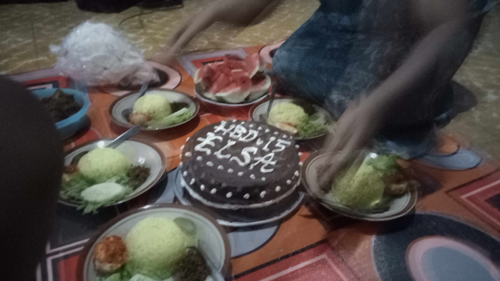

</img>
<canvas id="canvasfoto"></canvas><br>
<input type='range' id="x" value="0" onchange="cropRect()"></input><br>
<input type='range' id="y" value="0" onchange="cropRect()"></input><br>
<input type='range' id="w" value="10" onchange="cropRect()" min="10" ></input><br>
<canvas id="crop" height="150" width="150"></canvas><br>
<script src="crop.js"></script>
